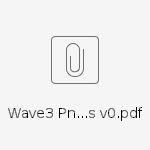

Clarify Requirements from WR PNC
Analyzed the requirements from WR's PNC, the requirements as follow attachment:

The disputed information is as follows：
1.Way point?
SF module provide centerline rather than way points, way points is a private definetion in Weride.
WR need convert the centerline to way point by themselves. (the conclusion was reached in Last May, and our interface is used to centerline rather than way point)
2.Lane associated stop lines?
SF can do this, we provide road element which include stopline in lane of the interface, but we couldn't promise the point of a centerline could intersect with the stop line.
And does WR have the condition of intersection threshold?
3.Lane associated keep clear region?
SF can associate GuideArea in lanes, and HDMAP of driving doesn't have No-Stop-Area, so it depens on Viper.
Now the interface doesn't have No-Stop-Area, if viper could detect it, i can add it.
4.Lane associate ETC?
NO, because Viper-traffic sign and HDMap both don't have this classification.
5.the Direction of Lane?
SF just provide the turn type in the intersection, if PNC want to get the turn type early, it can get it in the topic of : /A/hdmapsrv_horizon/planning_map_info_senderport.
6.Traffic light
1) Traffic light from viper provide the descision, it already describes the turn type in the intersection, so it doesn't need associate lanes in static fusion.
struct CXperTrafficLightDecisionOutput
{
CXPerTrafficLightDecision m_left;
CXPerTrafficLightDecision m_straight;
CXPerTrafficLightDecision m_right;
CXPerTrafficLightDecision m_uturn;
} m_decision_output;
2) Traffic light from viper couldn't provide position in ego vehicle coordinate, so SF module couldn't fuse trafiic light with Viper & Map.
3) Traffic light couldn't associate stop lines, because viper doesn't provide position of traffic light.
3) Traffic light couldn't associate lanes, because the type of light is already associated.
SF suggest PNC get the information of traffic light directly from viper.
4) No boundingbox of traffic light.
7. Stop line
Stopline couldn't provide detailed semantic type like StopSign, YieldSign, TrafficSignal.
8. Points of centerline
The centerline from SF just keep continous, not differentiable.(the conclusion was reached in Last May)
9. Roundabout
The information of roundabout can get from roadsection.
10.Blind zone information？
We don't know the specific meaning, and the interface doesn't accept this requirements.
11.All elements should provide level information, can be grouped together to present level.
We don't know the specific meaning of it, how to understand level.
SF module suggest that interface provided by RB shall prevail rather than WR's documents.
and we have already done with the interface agreed by both parties.